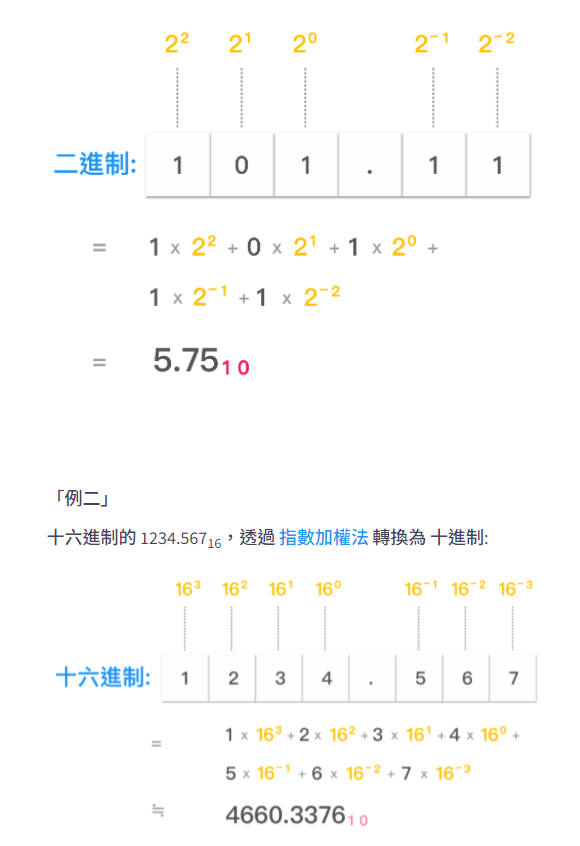

關鍵字、變量、數據類型與轉換
尚硅谷JavaSE筆記-02
關鍵字
關鍵字
有特殊含意與用途，所有關鍵字都是小寫
例如:if、new…等等，後面都會一一接觸到
保留字
未來版本可能會用到而保留
例如:goto、const
標識符(identifier)
可以自己命名的(類、變量、函數…等)就叫標識符
-
由字母、數字、
_、$組成 -
數字不可為開頭
-
能包含關鍵字但不能純用關鍵字
-
嚴格區分大小寫
-
不能包含空格
標識符的命名規範
不強制但最好遵守
-
包名:多單詞所有字母小寫
aaabbbccc -
類名、接口名:大駝峰(首字母大寫)
AaaBbbCcc -
變量名、方法名:開頭小寫後面首字母大寫(小駝峰)
aaaBbbCcc -
常量名:全大寫，用下畫線相連
AAA_BBB_CCC -
命名要有意義，見名知意
變量(variable)
記憶體中的一個儲存區域，使用的基本單位
- 必須先聲明，後使用
- 作用域在其定義所在的一對
{}內，只在其作用域中有效 - 同一作用域中不可重複
數據類型
基礎數據類型
六種數字類型（四個整數型，兩個浮點型），一種字符類型，還有一種布爾型
byte
- byte數據類型是8位、有符號的，以二進制補碼表示的整數
- 最小值是-128（-2^7）最大值是127（2^7-1）預設值是0
- byte類型用在大型數組中節約空間，主要代替整數，因為byte變量佔用的空間只有int類型的四分之一
- 例子：
byte a = 100，byte b = -50
short
- short數據類型是16位、有符號的以二進制補碼表示的整數
- 最小值是-32768（-2^15）最大值是32767（2^15 - 1）預設值是0
Short數據類型也可以像byte那樣節省空間 一個short變量是int型變量所佔空間的二分之一- 例子：
short s = 1000，short r = -20000
int
- int數據類型是32位、有符號的以二進制補碼表示的整數
- 最小值是-2,147,483,648（-2^31）最大值是2,147,483,647（2^31 - 1）預設值是0
- 一般整型變量預設為
int類型 - 例子：
int a = 100000,int b = -200000
long
- long數據類型是64位、有符號的以二進制補碼表示的整數
- 最小值是-9,223,372,036,854,775,808（-2^63）
- 最大值是9,223,372,036,854,775,807（2^63 -1）
- 這種類型主要使用在需要比較大整數的系統上
- 必須以
L(大小都可)結尾，不加自動被當成int - 預設值是0L
- 例子：
long a = 100000L，Long b = -200000L
float
float的儲存結構是1個符號位，8個指數位，23個尾數，符合IEEE 754標準的浮點數- 可以看做
float只有24位來表示精度，所以int或long轉``float可能會有精度損失 - 必須以
F(大小都可)結尾，不加報錯 - 預設值是
0.0f - 浮點數不能用來表示精確的值，如貨幣
- 例子：
float f1 = 234.5f
double
double數據類型是雙精度、64位、符合IEEE 754標準的浮點數- 浮點數的預設類型為
double類型 double類型同樣不能表示精確的值，如貨幣- 預設值是
0.0d - 例子：
double d1 = 123.4
char
- char類型是一個單一的16位Unicode字符(兩個字節)
- 最小值是’
\u0000’（即為0）最大值是’\uffff’（即為65,535） - char數據類型可以儲存任何字符，包含轉義字符(如
\n、\t等等) - 例子：
char letter = 'A'
boolean
-
boolean數據類型表示一位的信息 -
只有兩個取值：
true和false預設值是false -
這種類型只作為一種標誌來記錄true/false情況
-
實際大小不定，取決於虛擬機
-
例子：
boolean one = true
自動類型提升(隱式類型轉換)
針對上面7種基礎數據類型混合運算時(不含boolean)
- 不同類型運算時容量小的提升為大的，注意容量指的是數的范蓋範圍，例如佔64位的long可以提升成32位的float(代價是丟失精度)
- byte、char、short -> int -> long -> float -> double
- char因為在0~65535有可能在byte與short之間變動，但總之byte、short、char三者做運算時結果必須為int型(例如
byte+byte=int)
強制類型轉換(顯式類型轉換)
容量高轉低，自動類型提升的逆運算
double d1 = 12.3;
int i1 = (int)d1; // 截斷操作
- 使用強轉符()
- 可能導致精度損失或溢出
引用類型
包含:字符串(string)、類(class)、接口(interface)、數組(array)
- 在Java中，引用類型的變量非常類似於C/C++的指針 引用類型指向一個對象，指向對象的變量是引用變量 這些變量在聲明時被指定為一個特定的類型，比如Employee、Pubby等 變量一旦聲明後，類型就不能被改變了
- 所有引用類型的預設值都是
null - 一個引用變量可以用來引用與任何與之兼容的類型
- 例子：
Site site = new Site("w3big");
字符串(string)
string是一種特殊的引用類型
- 聲明:
String s1 = "xxx"; String可以跟8種基礎數據類型做運算，且只能是連接運算(+)，結果仍是String類型
N進制
- N進制轉十進制: 指數加權法
- 
- 十進制轉N進制:除N取餘的逆
- 最高位(符號位): 0正1負
- 正數: 原碼=反碼=補碼
- 負數: 除符號位以外其餘取反
- 補碼: 反碼 + 1(可能會進位)
- 電子數據底層儲存的是補碼!
上次修改於 2021-11-17